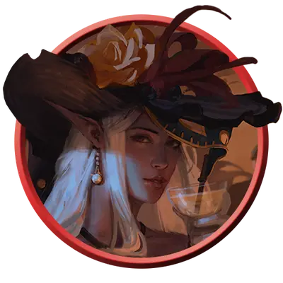

Шпион мастер
Spy Master
Средний или Маленький Гуманоид, Нейтральный

Класс Защиты 19 Инициатива +9 (19)
Хиты 137 (25к8 + 25)
Скорость 30 футов, Лазания 30 футов
| мод | спас | ||
|---|---|---|---|
| СИЛ | 10 | +0 | +0 |
| ЛОВ | 20 | +5 | +9 |
| ТЕЛ | 12 | +1 | +5 |
| мод | спас | ||
|---|---|---|---|
| ИНТ | 18 | +4 | +8 |
| МДР | 16 | +3 | +7 |
| ХАР | 16 | +3 | +3 |
Чувства пассивное Восприятие 21
Языки Общий плюс ещё два языка
Опасность 10 (5 900 опыта; БВ +4)
Действия
Мультиатака. Шпион совершает три атаки Рапирой или Одноручным арбалетом в любой комбинации.
Рапира. Бросок рукопашной атаки: +9, досягаемость 5 фт. Попадание: 14 (2к8 + 5) Колющего урона плюс 7 (2к6) урона Ядом.
Одноручный арбалет. Бросок дальнобойной атаки: +9, дистанция 30/120 фт. Попадание: 12 (2к6 + 5) Колющего урона плюс 9 (2к8) урона Ядом.
Дымовая бомба (1/день). Шпион кидает бомбу в видимую им точку в пределах 30 футов от себя. Спасбросок Телосложения: Сл 16, каждое существо в 20-футовой Сфере с центром на этой точке. Провал: 28 (8к6) урона Ядом, и цель Ослеплена до конца следующего хода шпиона. Успех: Только половина урона.
Бонусные действия
Хитрое действие. Шпион совершает действие Затаивание, Отход или Рывок.
Бонус мастерства +4
Среда обитания Пустыня, Верхние планы
Сокровища Магические
Шпионы
Лазутчики и осведомители
Шпионы собирают сведения и сеют ложь, умело манипулируя другими ради достижения целей, угодных их покровителям. Они обучены искусству обмана, проникновения и — когда того требуют обстоятельства — стремительного бегства. Многие из них прибегают к подставным личинам, подложным именам и кодовым прозвищам, дабы сохранять личность в тайне. Совершите два броска по таблице «Личность шпиона» для вдохновения или выберите сами альтер-эго шпиона.
| 1к4 | Шпион выдаёт себя за… |
| 1 | Барда или бродячего исполнителя. |
| 2 | Пленника или слугу какого-либо чудища либо злодея. |
| 3 | Важного посла или путника из дальних краёв. |
| 4 | Гостя из иной эпохи или другого мира. |
Шпионы мастера обладают богатейшим опытом в добыче чужих секретов, не оставляя за собой ни малейших следов присутствия.